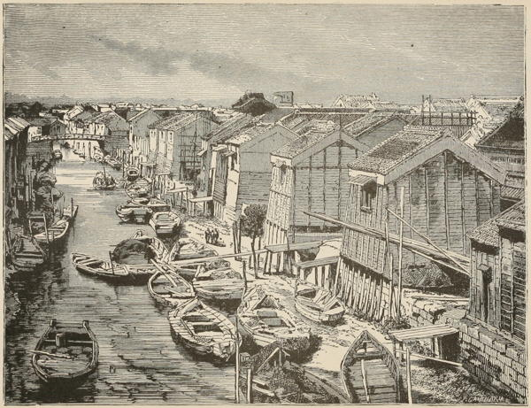

“Noon scene on a Japanese canal”
Japan in Our Day (1872)
We were in the deepest channel [in Edo Bay], to judge from the size of the native craft which chose it, and found at half flood eight feet of water at our furthest sounding. At this point numbers of junks were anchored, and some small schooners built from European models. The largest of these junks may have been of 150 tons burden, high-sterned, heavily-masted, quaint-looking craft: the masts are not composed of a single spar, but built and ribbed with iron, rising from the deck like some gigantic forest-tree to a height of forty or fifty feet: the top of the mast was slightly bent, and from it depended a vast expanse of a coarse cotton fabric, attached to a yard on the same scale as the mast, so massive, that to hoist it must be as laborious an operation as weighing anchor. The rudder projects far astern, and is moved by a huge tiller extending half the length of the craft. An extensive assortment of anchors garnish the bow, and on deck there is frequently a thatched shed for the crew. Altogether the rig is clumsy to the nautical eye; but we met several of their junks making good weather of it when it was blowing freshly. It is said, however, that a Government rule exists, compelling them to be built on a principle which renders it dangerous for them to venture far from shore, so as to prevent their visiting foreign countries.
Narrative of the Earl of Elgin’s Mission to China (1859)
The ferry across the river was a primitive but safe affair; it consisted of a large flat-bottomed boat, unpainted, and propelled by a long bamboo pole in the hands of a stout peasant. The ferryman’s price could hardly be called extortionate; to carry my vehicle and luggage and two passengers to the other side of the river, he asked three sen, or about a penny!
Rambles Through Japan Without a Guide (1892)
Arrived at last at Hodsugawa, we found a long canoe which easily took in three of our jinrikshas, our four selves, and several boatmen. To suit the convenience of the foreigners, one very high seat, in the shape of a narrow plank, had been fitted across the boat, and, perched side by side on this, we were able to enjoy all the fun and beauty of our trip down the river. True, it needed some care to maintain our equilibrium, for the sun compelled us to hold up parasols, and the time of day compelled us to take our luncheon, packed with characteristic Japanese neatness in four white wooden boxes, worthy to contain delicate Swiss carving. But, fortunately for us, the rapids were not continuous, and we were sufficiently comfortable to enjoy every exciting moment.
I only wish words could fully describe the experiences of the next hour and half. Now a quiet reach of water, when the men worked steadily with two clumsy oars on one side of the boat only; then in a moment we were rushing down a rapid, just shaving a jagged brown rock, and sprayed by the water as it foamed past us, until we found it difficult to believe that the thin pliant planks beneath our feet, which swayed like the breast of the sleeping lady in Madame Tussaud’s, could preserve us from a plunge in the chilly waters of the Katsuragawa! The pleasant rush and excitement lasted but a few seconds, and again we were in a quiet pool, looking up to the wooded hills that towered above us, and at another boat whose men were slowly tugging it up the river, jumping and slipping from rock to rock on the banks. Yet with never a pause sufficient to cause weariness, for—rush and swirl—we are in again. We graze a rock! Is there a hole in our boat? No; we are safely through; and one of our oarsmen is pulling the cork of a bottle destined for our luncheon, though in ten seconds or less he will be due at his post in another rapid! The real tug of war came on the steersman, who stood erect and graceful at the prow, with only a long bamboo to use as a rudder, but with as complete a control of the boat as if he had the latest improvement in steering by electricity at his disposal,—landing us an hour and a half later at Arashiyama, with the pleasantest recollections of the Rapids of the Katsuragawa.
Japan As We Saw It (Bickersteth) (1893)
Another pleasant excursion was to Lake Biwa, lying high in the mountains and surrounded by beautiful snow-covered peaks. After two hours’ ride, we descended to the town of Otzu on the borders of the lake. ... From Lake Biwa a canal is made to connect the lake with Kyoto, by means of three long tunnels under the mountains, through which we were conveyed in a covered barge. The longest of these interesting water tunnels was three miles in length.
Impressions of a Journey Round the World (1897)
After leaving Gosha I proceeded to Fujimi, the port of Kioto, where I embarked on board a curious little steamer to descend the Yodi-gawa to Osaka. The voyage was amusing, as the cabin was very small, and I sat in the stern, contemplating the native travellers squatting on the floor. They were very kind, and invited me to share their food. The earlier part of the sail down this fine wide river is beautiful from the mountain views in the distance, though afterwards it becomes dull. The voyage is not without risk, as the steamers are of the worst description, and the bed of the river is very shifting, so that we twice ran aground. The native boats, with their large tattered sails, are picturesque. In four hours and a half we reached Osaka.
A Visit to Japan, China, and India (1877)
Though the Japanese have purchased the Pacific Mail boats, they have to leave the American captains and officers in charge. This they are compelled to do, as otherwise the underwriters would refuse to insure.
A Visit to Japan, China, and India (1877)
◀ RoadsKago/norimono ▶